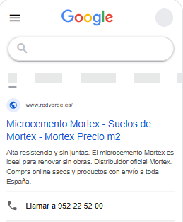
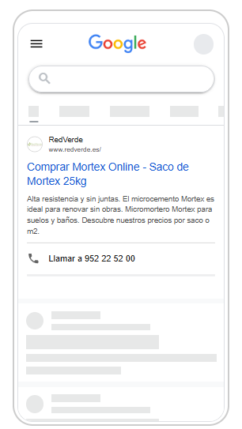
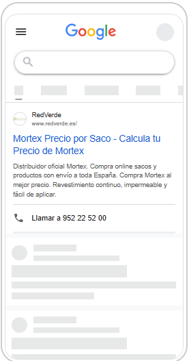
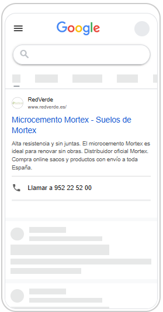
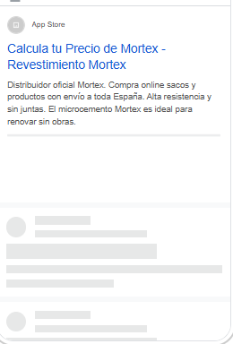
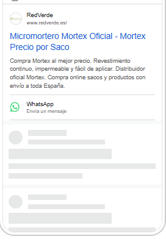
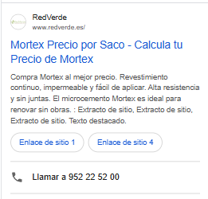

Es el primer mes completo en Andalucía y Levante. Hemos afinado la campaña para que solo la vean personas que están en tu zona y para no pagar búsquedas de otras marcas o de otros productos. El resultado es un tráfico más ajustado, pero también más pequeño: menos búsquedas, menos visitas y menos contactos que en septiembre.
Han llegado 4 por el formulario y 1 por el WhatsApp de la web. Son 5 contactos en total, a 39,51 € de media.
Mismo presupuesto, pero octubre es el primer mes entero solo en tu zona y con los nuevos filtros. Así lo reflejan las cifras:
El anuncio se ha mostrado la mitad de veces. No es por la competencia, porque tu anuncio aparece en más búsquedas que nunca (ver más abajo). Es porque hay menos búsquedas que cumplen los filtros: solo personas que están en Andalucía o Levante y solo búsquedas de Mortex, mortero de cal o alternativas al microcemento. Con menos búsquedas, cada visita se ha pagado más cara.
Veces que se mostró el anuncio cada día de octubre. Hasta el 11 de octubre, una media de 37 al día; desde el 12, cuando ampliamos las búsquedas excluidas, unas 26 al día. La última semana del mes recupera algo de ritmo.
Tres cambios para que el presupuesto vaya solo a quien de verdad puede comprarte Mortex en tu zona:
Antes, Google también mostraba el anuncio a quien buscaba desde fuera pero mostraba interés por Andalucía o Levante. Desde el 1 de octubre, solo lo ve quien está físicamente en tu zona.
Hemos excluido más de 60 términos: marcas competidoras (Cumen, Weber, Topciment, Cimentart, Epodex…), tiendas como Leroy Merlin u Obramat, y búsquedas de fachadas, revocos o morteros hidráulicos que no encajan con Mortex.
Hemos ajustado varias palabras clave para que solo se activen con la búsqueda exacta y hemos añadido «microcemento ecológico», que encaja con el posicionamiento de Mortex como alternativa sana al microcemento.
En el informe de septiembre previmos entre 6 y 9 contactos por formulario en octubre, más los de WhatsApp. Este es el resultado:
Octubre se ha quedado por debajo de la previsión. La previsión partía del ritmo de septiembre, cuando el anuncio aún llegaba a búsquedas más amplias. Con los filtros de octubre, el volumen de búsquedas disponible en tu zona es menor de lo que esperábamos, y ahí está el margen de mejora para los próximos meses.
De todas las búsquedas en las que tu anuncio podía aparecer, este es el porcentaje en el que apareció realmente:
Tu anuncio ya aparece en más de la mitad de las búsquedas posibles de tu zona, y cuando aparece lo hace en la parte superior de la página el 80 % de las veces (el 76 %, en primera posición). BEAL ya no aparece entre los anunciantes que compiten con tu anuncio. Los otros anunciantes que pujan ahora son Cimentart y Epodex, dos marcas de microcemento, con una presencia muy inferior a la tuya.
Las búsquedas que más visitas han traído en octubre:
Quien busca Mortex por su nombre sigue siendo la principal fuente de visitas, pero las búsquedas de producto como micromortero de cal y alternativas al microcemento ya aportan una parte importante. Son justo las búsquedas que queremos hacer crecer para no depender solo de la marca Mortex.
Los anuncios no han cambiado este mes. Esto es lo que ve una persona en su móvil cuando busca «mortex», «microcemento» o «mortero de cal»:







Así se estrecha el «embudo» de la campaña. Estos son los números de octubre:
Los clics se mantienen e incluso mejoran: 13 de cada 100 personas que ven el anuncio entran en la web. Donde baja octubre es en la proporción de visitas que acaban contactando, de 7 a 4 de cada 100.
Este mes las cifras de contactos son las que registra Google: 4 envíos del formulario y 1 clic en WhatsApp.
Google no registra a las personas que rechazan las cookies de la web. En meses anteriores, al cruzar sus datos con los envíos reales del formulario, la diferencia ha sido de unos pocos contactos, a veces por arriba y a veces por abajo.
Con tan pocas búsquedas, Google está pagando caro por salir siempre el primero: la visita ha pasado de 1,04 € a 1,62 €. Proponemos fijar un precio máximo por visita, en torno a 1,20 €. Saldríamos algo menos arriba, pero el mismo presupuesto daría para bastantes más visitas.
Hay mucha más gente buscando «microcemento» que «mortex», y en las primeras pruebas de octubre esa visita ha salido a 1,47 €, por debajo del límite de 2 € que nos marcamos. Proponemos probarlas con un presupuesto acotado, presentando Mortex como la alternativa natural.
Siguen apareciendo búsquedas de Mortex en otros idiomas desde tu zona (neerlandés, alemán, francés). En la Costa del Sol y en Alicante hay un público extranjero con presupuesto de reforma al que hoy hablamos solo en español.